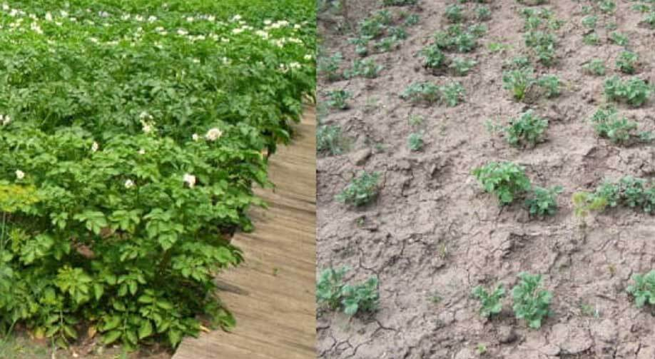
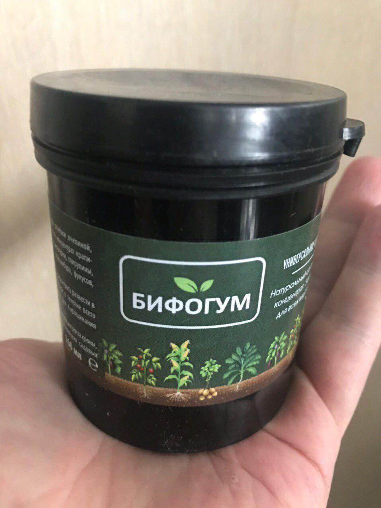
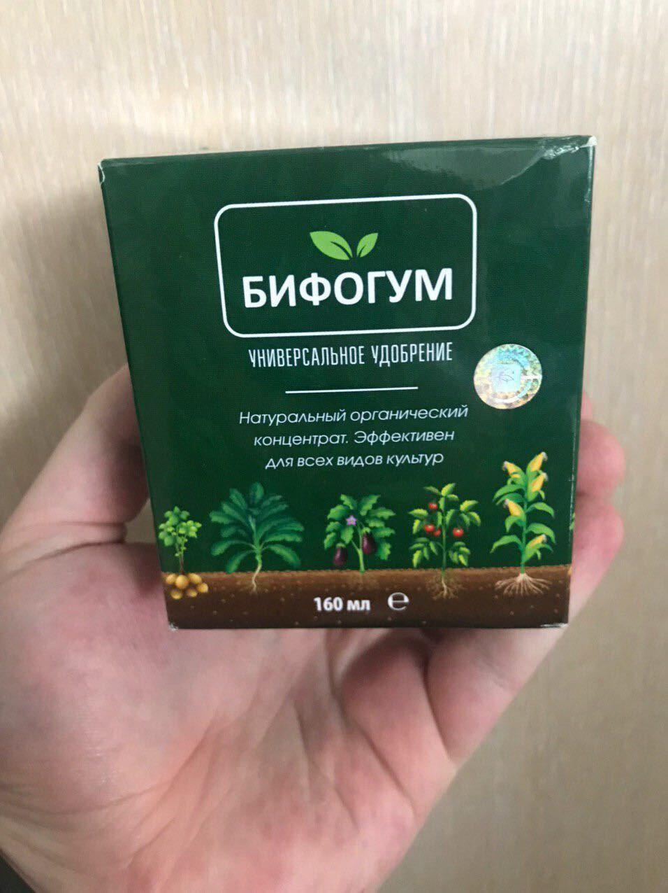
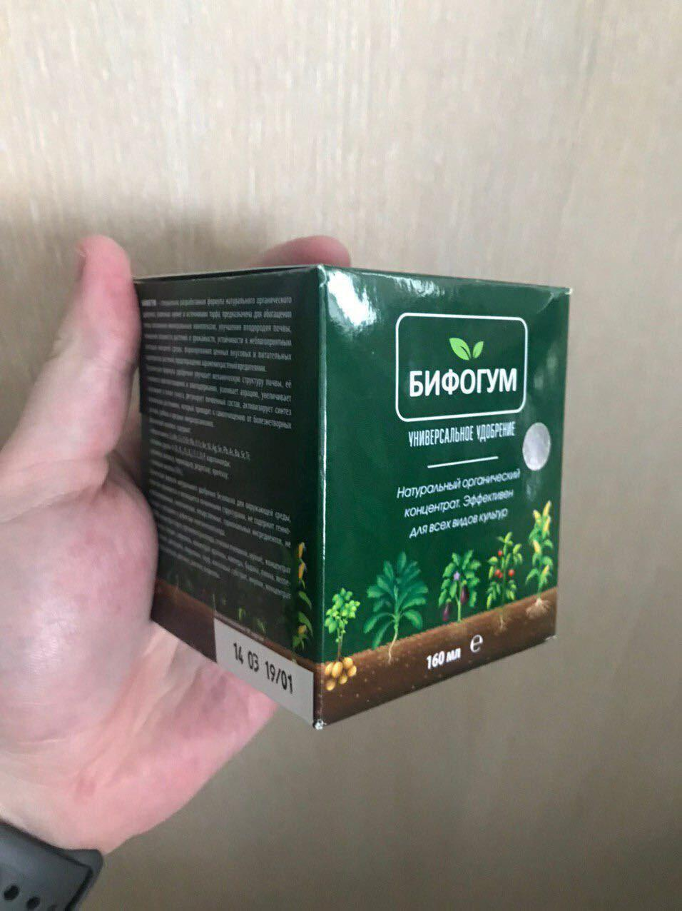
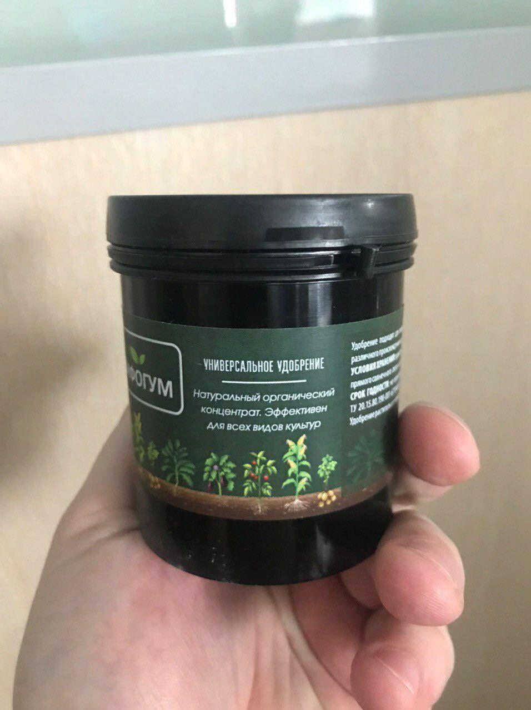

ҚАЛАЙША МЕН АЛДЫНҒЫ ЖЫЛЫ КАРТОП САТЫП ЖАҢА КӨЛІККЕ АҚША ЖИНАДЫМ! АЛ БҰЛ ЖЫЛЫ ОДАНДА КӨП ТАБАМЫН!
Редакциядан: Бізге үнемі оқырмандарымыздан тым аз зейнетақы және жалақы алатыны жайлы хаттар келіп жатады. Бүгін Өскемен қаласынан тұрақты оқырманымыз Азамат Орынтаев өзінің жаңа ақша табу жолымен сіздермен бөлісетін болады!
Қайырлы күн, құрметті оқырмандар! Бүгін мен сіздерге өзімнің бірнеше ай ішінде еш қиындықсыз 3500000 теңге табыс тапқаным жайлы айтқым келеді .
Есімім Азамат, 47 жастамын. Мен Өскемен қаласында тұрамын, бұрын зауытта жұмыс жасағанмын, ол жақта жұмыстан қысқартып жіберді. Балаларым барлығы ер жетіп, бой жеткелі әйеліміз екеуміз тұрамыз. Қазір қоймада жүк тасушы болып жұмыс жасаймын, айлығым 70 мың теңге. Өмірімде мүлдем бизнес, көп ақша дегенмен айналысып көрмеппін, тек қара жұмыс жасап келемін. Жазда бақшама кішкене көкөністер егемін картоп, орамжапырақ, қияр, пияз т.б.
Бақшам үлкен емес, 6 соттық.Егін жеткілікті шығады. Ақшаны үнемдеп жаратсаң әрине. Бірақ бәрібір балаларыма көмектескім келіп тұрады. Бір ұлым Алматыда 4 курс студенті, одан кейінгі қызым биыл оқуға түсті. Үлкен қызым күйеуімен ажырасып, өз балаларын өзі бағып отыр. Қысқасы маған ақша ешқашан артық етпейтінін түсінген шығарсыздар.

Былтырғы жылы көктемде бір журналдан Вьетнамдық зейнеткер өз кәсібін қалай сәтті құрғанын оқыдым. Зейнетке шыққан биолог өз білімін практикада тексеріп және сол арқылы ақша тапқысы келген. Ол өзіне ерекше тыңайтқыш сатып алып, өз бақшасына жемістер мен көкөністер егіп бастаған. Нәтижесінде Вьетнамдық зейнеткер көкөніс сатып жарты жылда байып кеткен. Содан кейін қаладан пәтер алып, көшіп кеткен. Қазір ол кісіні бүкіл әлем тілшілері таниды.
Қысқасы мен осы журналды оқығаннан кейін картоп егіп көрмек болдым. Тыңайтқыш жайлы көптеген мәліметтер іздей бастадым, оны қалай қолданған дұрыс, қашан бастаған дұрыс туралы ақпараттар қарадым. Соңында Бифогум деп аталатын тыңайтқышты таптым. Оның бір артықшылығы егін барысында да, егіп қойғаннан кейінде қолданса болады екен. Айырмашылығы егін алдында қолдансаңыз онда барлық егілген картоп өнім береді. Ал егінді егіп болған соң Бифогум-ты қолдансаңыз картоп тезірек өсіп шығатын болады!
Мен бірден екі қорап тыңайтқышқа тапсырыс бердім. Бақташылар форумында ұсынған ресми сайттан тапсырыс бердім. Сіздергеде сілтемесін қалдырып кетемін, егер мен секілді егін еккіңіз келсе пайдасы тиер. Тапсырым жылдам келді. Тыңайтқышты үйге дейін әкеліп берді. Жеткізу жағынан барлығы көңілімнен шықты.
Қар кете салысымен мен тыңайтқышты тексермек болып шештім. Жерімнің 3 соттығына картопты тыңайтқышпен, ал қалған жартысына тыңайтқышсыз ектім. 15 күн ішінде болған нәтиже мені қатты ТАҢ ҚАЛДЫРДЫ. Картоп өсіп шығып, гүлдеп қойыпты. Ал тыңайтқыш қолданбаған жерлерден әлі картоптын ізіде көрінбеді.

Қуанышымда шек болмады. Екінші рет келіп бір тыңайтылған түптен картоп алып көрмек болып шештім. Тағы да таң қалдым! БІР ТҮПТІ АУДАРЫП БІР ШЕЛЕК КАРТОП АЛДЫМ!
Содан кейін тағы да 12 түпті қазып көрдім. Алдынғыдан кем емес! 12 түптен 3 қап картоп алдым. Бұл бар болғаны 3 аптада болған нәтиже. Көп ойланбай мен барлық жердегі картопты қазып алуды шештім (3 соттық жерден шамамен 50 қаптай теріп алдым!) Тағы да тыңайтқышқа тапсырыс бердім, уақыттан ұтылмас үшін артығымен алдырттым. Көктем басталғаны енді әлі күзге дейін жоқ дегенде 6-7 егін алатынымды түсіндім. Пайданы екі есе алу үшін барлық жерге тыңайтқышпен ектім.
Тыңайтқышты өте жылдам жеткізіп берді. Мен үшін бұл өте тиімді болды, себебі маған аз уақыт ішінде барынша көп картоп алу керек!
Тыңайтқышты ала салысымен мен егінді бастап кеттім. Алдынғы алған картопты топырағына тыңайтқышты аямай қосып қайта егіп, егіннің шығуын күттім. Базардың әкімшілігімен келісіп келдім, маған базарда картоп сатуға рұқсат етті. Оларға картопты тау-тау етіп алып келіп сатамын дегенде барлығы менін ақыл есім дұрыс емес деп ойлады, көктемде кім картоп егіп өсіріп сата алады?!
Егінді жинап базарға шығарған кезімде олардың таң қалғанын көрсеніздер. Екінші егінде мен 3 апта ішінде 6 соттық жерден 156 қап картоп алдым. Түсінуімше тыңайтқыш жерге және топыраққа жақсы әсер еткен, бір жерге тыңайтқышты көбірек қолданған сайын егінде көбірек береді!
Сіздерді алдамаймын, сәуір айынан бастап қазан айына дейін мен картопты 7 рет егіп, егін алдым. Бар жоғы 6 соттық жерден шамамен 1800 қап картоп алдым. Түскен ақшаға Lada Granta маркалы су жаңа көлік алдым. Осы жылы көршілерімнің жерінде жалға алғалы отырмын. Табыс көбірек болуы үшін!
Картоп жоғарғы сортты: бір келкі,ірі. Дүкендегіден жақсы. Пайдалы, өзіміздің өнім. Жертөледе сақтаған былтырғы картоптар әліде бар, шіру деген мүлдем жоқ, дәмі болса керемет. Сіздерге де осы тыңайтқышты қолданып көруге кеңес беремін. Шығындар тым аз кетеді, ал нәтижесі таң қаларлық. Өзім осы жылы былтырғы жеткен жетістікті жаңартпақшымын. Бифогумтың 40 қорабына тапсырыс беріп қойдым. Осы жылғы егін маусымында қаладан пәтер алуға ақша жинап қалармын. Міне менің жазғым келген мақалам осы, сіздерге де пайдалы, көмегі тиеді деп ойлаймын!
Қосылды 1 мамыр: Біз көкөніс өнімдерін өсіруді жетілдіретін Агромакс тыңайтқышын өндірушімен байланысқа шықтық. Олар Азаматтың сөзін растап отыр, Агромакс тыңайтқышымен өңделгеннен кейін картоп өсіп, жақсы дамиды, картоп түбірі 2,5-3 апта ішінде толық өседі, бір түптен 8-10 келі картоп жинауға болады. Өндіруші тыңайтқыш барлық сынақтардан өтіп, арнайы сертификат алғанын айтты.
Бифогум сертификаты
Ал ең маңыздысы өндіруші біздің оқырмандар үшін арнайы баға ұсынды - 990 тнг.
Бифогум тыңайтқышын 990 теңгеге алу үшін бар болғаны 3 шартты біліңіз . Тек 1 мамырға дейін:
- Ресми сайтта форманы толтыру.
- Арнайы маманның қоңырауына жауап беріп қай күні қалай жеткізу керектігін таңдайсыз (курьер, пошта)
- 1-3 күн ішінде тыңайтқышты тексеріп алып, ақшасын төлеу.
Тыңайтқыш кез келген қалаға, ауылға пошта немесе курьер арқылы жеткізіледі бағасы бар болғаны 990 тнг.
Пікірлер
Анара Жубайдилдаева
Былтыр бизде осылай еккенбиз. Куйеуым билмеймын кайдан акелгенин алып келген уйге. Бирак полностью огородка куйып тастадык, сосын картошканын барин тауыса алмай туыстарга коршилерге таратып бердик. Биыл азырак егетин шыгармыз немесе сиз секилди сатамыз

Дана Койбагарова
Осы удобрение туралы кеше твдан корсетти. Канадский ученыйлардын ойлап тапканы дейды. Барлыгы мактап жатыргой айтеуыр
Жанибек Абдурасил
Менде қосыламын. Алдынғы жылы огурцы мен картошка ектік. Негізі 10-20 қап ғана алатынбыз, биыл бақандай 70 қап таза өнім алдық. Көршілер қызғаныштан іштері күйген шығар. 
Алишер Нураханов
Казир окып шыктым. Мундай нарсе бар екенин мулдем билмеппин бурын. Заказ бердим казир.
Галия Тойшыбекова
Биз колданып кордик. Огород бурын сонды булай оним бермеген, топырагы кунарлы емес шыгар деп ойлайтынбыз. Тынайткыш кадимгидей комектеседи

Кулай Темирханова
Естип жургенимизге бираз болды, бирак акшанды кимайсынгой барибир. Коремиз осы жылы алдыртатын шыгармыз.
Ерден Ибаш
Солтустик жакта жаксы асер етеди. Кыстан сон жердин тоны кетпей бираз кутип каласын, агромакспен ексен бари жаксы шыгады.
Жандаулет Дуйсенов
Ракмет кенестеринизге. Биздин елде шынымен косымша тирлигин истемесен кун кору киын, алдыртып корейын менде биыл картошка пияз егип!
Кенжебек Куанышбай
Базардан коресингой осындай удобрениелер багасы удайгой. Ал мынау агро макс багасы калтага тиымды екен!
Лаура Жылкыайдаровна
Биздин коршилер егинмен айналысадыгой айтеуыр жагдайлары тым жаксы, егин мен мал сени бирден байытатын деген рас кой негизи.
Дидар Игликов
Жигиттер бул рас ангиме, сенсендер болады. Мен уже биыл ушинши жыл колданып келе жатырмын, негизинде буны секрет ретинде устайтынмын ешкимге айтпай

Мариям Сейтжанова
Официальный сайтын корип шыктым производителдын. Горячая линия телефоны бар екен ардайым сурактарына жауап берип отыратын. Заказ бердим мундай шансты жиберип алмау керек.
Жанабил Суфхи
Макалана рахмет бауырым. Удобрениеге заказ бердим, колданып корейын. Бирси куни акелип беремиз дейды.